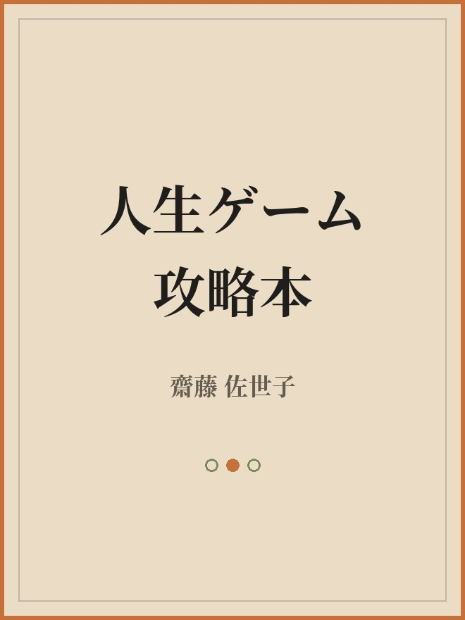

マヤンエッセンス
お話会
地球はゲーム？ 自分のキャラクターを知る
花のしずく ／ 株式会社和樂神樂
自己紹介
齋藤 佐世子
花のしずく主宰
株式会社和樂神樂 代表取締役
和樂フラワーエッセンスプロデューサー
4人の娘のお母さん。最近おばあちゃんになりました。
私たちはこの地球に
ゲームをしにやってきた
この地球はフルダイブ型の体験型ゲーム。魂はキャラクターを選び、やりたいこと、クリアしたい課題など目的を持ってこの世界に降りてきました（＝ブループリント）。
クラウド
アカシックレコード・エメラルドタブレット・虚空蔵菩薩
フィールド
パワースポット。3,000以上の巨石遺跡はワールドグリッド上に
キャラクター
性格。マヤ暦のKIN・紋章・音に記されています
ゲームがうまくなるために必要な4つのこと
1
ゴール設定
2
ゲームシステムの理解
基本をおさえる
3
上達する練習方法を知る
キャラクターを知る ← 今日はここ
4
必要な時間をかける
1000時間で上級者に
私たちはスマホ
充電はできていますか？
メモリは空いていますか？
どんなキャラクターなのか
知っていますか？
何に幸せを感じ、何に怒るのか？
感情はキャラクターのもの。
マヤのキャラクターを知る
どんなキャラクターですか？
どんな時嬉しいですか？
どんな時後悔しますか？
どうなると成功ですか？
あなたのKINには、ふたつの紋章
太陽の紋章
行動の部分
日々の行動・考え方・人との関わり方。周りからも見えている「表の顔」。
ウェイブスペル（WS）
魂のグループ
魂が描いてきた望みと、心の奥のテーマ。ふだんは意識しにくい潜在的な自分。
マヤンエッセンスは、それぞれの紋章に2本ずつ — 全40本。
魂とキャラクターの
周波数を合わせて生きる
魂は生まれる前に青写真（ブループリント）を描き、ぴったりのキャラクターを選んで生まれてきました。キャラクターを生かして生きることは、魂の望みを叶えることと一致しています。つまり——自分の周波数を正しくチューニングすること。
人生がうまくいかないと感じるとき
周波数がズレているサインかも
- 無理して誰かの期待に応えている
- 自分らしくない選択を続けている
- 感情が重たく、疲れやすくなっている
「本来の自分の放送局に、今、チャンネルは合っているかな？」
波動が合ってくると、
人生は軽やかに進み出す
- やることのタイミングが自然と合ってくる
- 心地よいご縁が増えていく
- 無理なく、自分らしさを生きられる
- 小さなシンクロニシティに背中を押される
Mayan Essence
マヤンエッセンスとは
- キャラクターをサポートする2〜3種類のフラワーエッセンス
- TimeWaverでマヤのエネルギーの書き込み
- あなたの周波数をサポートするアイテム
- 太陽の紋章版とウェイブスペル版、全40本

{{ s.noLabel }} · {{ s.en }}
{{ s.name }}
{{ s.kwLine }}
{{ fl.f }} 『{{ fl.m }}』
太陽の紋章版（行動）／ ウェイブスペル版（魂）の2本
自分の特性（強み・課題）を探り、
それをサポートする
エッセンスを選ぶ
これからの人生を見る
- どんなゲームを生きたいか？
- 全く新しいゲーム？ 今までのゲームをアップデート？
- 自分のキャラクターが新しいゲームでどんな役割をする？
ありがとうございました
✿ 和樂神樂ホームページ waraku-fe-japan.com
✿ 【無料】メルマガ登録 reservestock.jp/subscribe/71257
✿ ネットショップ『花のしずく』 hananoshizuku.jp
✿ 【無料】メルマガ登録 reservestock.jp/subscribe/71257
✿ ネットショップ『花のしずく』 hananoshizuku.jp